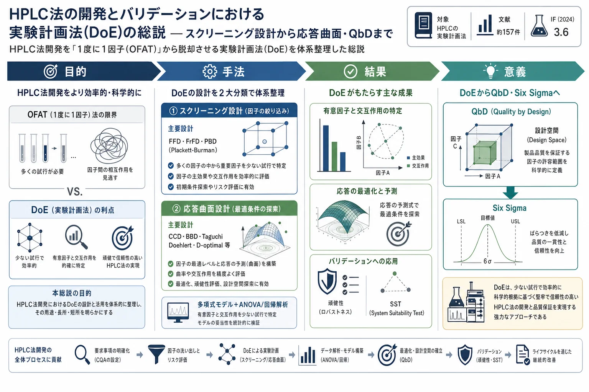

HPLC法の開発とバリデーションにおける実験計画法(DoE)の総説 — スクリーニング設計から応答曲面・QbD・Six Sigmaまで

<!-- 方針: ほぼ全訳＋必要に応じた補足。原文構成に沿って訳出。応用例の一覧表(Table 3/5)は代表例を抜粋し全件は原文参照とした。「> 補足:」は訳者注。 -->
書誌情報
- 原題: An overview of experimental designs in HPLC method development and validation
- 著者: Prafulla Kumar Sahu, Nageswara Rao Ramisetti, Teresa Cecchi, Suryakanta Swain, Chandra Sekhar Patro, Jagadeesh Panda（Raghu College of Pharmacy／CSIR-IICT、インド／ITT Montani、イタリア ほか）
- 掲載: Journal of Pharmaceutical and Biomedical Analysis 147 (2018) 590–611. https://doi.org/10.1016/j.jpba.2017.05.006
- インパクトファクター: 3.6（J. Pharm. Biomed. Anal., JCR 2024 / Clarivate）
- 受理経過: 受領 2017-02-13 / 改訂 2017-05-01 / 採録 2017-05-04 / オンライン公開 2017-05-07
- キーワード: ケモメトリー／スクリーニング設計／最適化設計／メソッド開発・バリデーション／数理モデリング／Quality by Design／Six Sigma
補足: DoE (Design of Experiments, 実験計画法) = 複数の因子を統計的に組んで少ない試行で最適条件・因子影響を突き止める手法。OFAT (One Factor At A Time) = 従来の「1度に1因子だけ動かす」やり方（交互作用を見落とす)。生薬QCでも指紋・多成分定量法の条件最適化（移動相組成・pH・温度・流速…)と頑健性試験にそのまま使える方法論で、本総説には丹参(Salvia miltiorrhiza)・三七人参サポニン・黄連(Coptis chinensis)アルカロイドなど漢方・生薬の適用例も多く含まれる。用語: ANOVA=分散分析、MLR=多重線形回帰、RSM=応答曲面法、SST=システム適合性試験、FFD=完全実施要因計画、FrFD=一部実施要因計画、PBD=Plackett-Burman計画、CCD=中心複合計画、BBD=Box-Behnken計画、CMP=重要メソッドパラメータ、CQA=重要品質特性、ATP=分析目標プロファイル。
要旨（Abstract）
ケモメトリクス的手法は、多数の変数を同時に制御して目的の分離を達成できるため、HPLCの実務に対する貴重な補完とみなされてきた。少ない実験試行で有意因子を効率よく同定・最適化できる。本稿は、高速・超高速LCにおける各種ケモメトリクス手法の有用性を、(i) 溶出試験・前処理から検出（従来検出器のタンデム質量分析への漸進的置換、安定性指示アッセイの重要性を含む)に至るメソッド開発、(ii) スクリーニング・最適化設計によるメソッドバリデーション、について論じる。適切な実験計画の選択（有意因子のスクリーニング／選択因子の組合せ最適化)とケモメトリクスの数理モデルを簡潔に整理し、ケモメトリクス的アプローチの利点を強調する。実験計画からQuality by Designパラダイムへの発展をレビューし、クロマトグラフィーの品質指標としてのSix Sigmaを説明する。
1. 序論（Introduction）
現象のモデル化には、観測事実に意味を与えるモデルが要る。クロマトグラフィーでは最適化パラメータ空間が広く（pH、添加剤の種類・親油性、有機溶媒濃度、イオン強度、固定相充填…)、分析対象の性質差（非イオン性・イオン化性・イオン性)もあって、最適条件の合理的選択が大きな課題となる。OFAT（1度に1因子)は交互作用を捉えられず、非最適で頑健性が不明なメソッドに終わりがち。DoE/ケモメトリクスはこれを、少ない試行で有意因子と交互作用を同時評価して克服する。
2. 実験計画（Experimental designs）
実験計画は、1つ以上の因子を意図的に操作して結果への影響を見る手法。目的によりスクリーニング設計と応答曲面(最適化)設計に大別される（Fig. 1、Table 1）。
2.1 スクリーニング設計
多数の因子から影響の大きい因子を絞り込むのが目的。よく使われるのは（長短は Table 2）：
- 完全実施要因計画 (FFD): 2〜3水準。全因子・全交互作用を評価できる。2〜4因子向き。欠点は16因子超のスクリーニングが不可能（因子増で試行が算術的に増加)。
- 一部実施要因計画 (FrFD): 2水準。FFDの一部で、分数 $1/X^p$（$p$=分数化の度合い)、必要試行数は $X^{n-p}$。同数因子をより少ない試行で。4因子超向き。欠点は交互作用情報が不十分で実験誤差を持たない場合があること。
- Plackett-Burman計画 (PBD): 2水準。$N$（4の倍数)回の試行で最大 $N-1$ 因子を検討でき、反復やダミー因子で実験誤差を評価できる。多数因子から少数の有意主効果を選抜するのに有効（交互作用は考慮しない)。
因子影響はANOVAまたは回帰分析で算出。頑健性・ラギッドネス試験にも同型の設計を使う（水準の間隔が違うだけで手順は同様)。3水準以上や混合水準のスクリーニング設計の適用例も多い。$2^3$ 要因計画の多項式モデルは一般形(式5)で展開できる：
$$Y = B_0 + \sum_{i=1}^{n} B_i X_i + \sum_{i<j} B_{ij}X_i X_j + \sum_{i<j<k} B_{ijk}X_i X_j X_k \tag{5}$$
$n$=因子数、$X$=符号化因子($\pm1$)。符号化(式6)は「（使用量 − (最大+最小)/2) ÷ (最大−最小)/2」。$Y$=応答、$B$=係数（RSMで算出)。因子水準の正規化(式4)は $N=(X-L)/(H-L)\times100$（$L$=最低、$H$=最高水準)。
2.2 応答曲面（最適化）設計
スクリーニングで選んだ有意因子の最適設定を求める。FFD/FrFDは1次(線形)モデルで曲率を捉えられないため、2次モデルが必要。主な応答曲面設計：
- 中心複合計画 (CCD, Box-Wilson計画): 3水準。2水準要因計画($2^n$)の核＋中心点1＋星型(軸)点 $2n$個（各座標軸上に $\pm1, \pm2, \dots, \pm\alpha$。$\alpha$=軸点の中心からの距離)。最小の実験で最大情報。効果・交互作用はコントラスト法やYatesアルゴリズム、係数は回帰分析やDavies法、有意性はYates法ベースのANOVAやStudentのt検定で算出。多項式(式7)：
$$Y = B_0 + \sum_i B_i X_i + \sum_{i<j} B_{ij}X_i X_j + \sum_i B_{ii}X_i^2 \tag{7}$$
$X$ は必要なCCDに応じ $0$・$\pm1$・$\pm\alpha$。最適化は、等式・不等式制約の下で目的関数(式8: $Y=f(X_1,X_2)$)を最大/最小化する数理最適化で行う（不等式制約 $G(X)\ge0$（式9)、等式制約 $H(X)=0$（式10))。
- Box-Behnken計画 (BBD): 3水準。極端な同時条件（全因子が最高/最低)を避けられる。
- Taguchi計画 (TD): 2水準。直交表（例 L16 の $2^{15}$ 線形エイリアスモデル)。
- Doehlert計画: 多水準。因子ごとに水準数が異なる効率的配置（2因子で7点)。
- D-optimal計画: 2水準（2因子で9点の例)。制約付き領域に有効。
- Hybrid計画: 多水準。合計100%となる混合系(3成分)などに。
3. ケモメトリクスの数理モデル
得た応答データはMLR等で解析し客観的な結論を導く。応答変数・重要メソッド変数・その範囲・適切な数理モデルの知識が不可欠。応答曲面プロット・等高線図・摂動プロット・線形相関プロット・外れ値プロット・Box-Coxプロットなどの2D/3D図が、変数–応答関係と交互作用の機構的理解に有用（Fig. 2にMLRベースの回帰モデルの流れ)。
4. ケモメトリクス設計の応用
多数の影響因子から出発するHPLCと実験計画による結果評価は、フィッシュボーン図(Fig. 3) で表せる（制御変数・ノイズ変数がメソッドの望ましさ(応答変数)にばらつきをもたらす)。DoEの目的は、全制御変数を同時に論理的に調整して応答を最適化すること（一変量アプローチでは望ましさを担保できない)。設計の選択は目的・関心・実行可能性・費用・時間による（有力因子探索なら2水準要因計画、既知の有力因子の最適化ならCCD/BBD)。
- 4.1.1 溶出試験: 溶出媒体の最適化。複数の有効成分（構造・溶解度が異なる)を含む錠剤で特に重要。溶出液からのHPLC回収率解析にケモメトリクスが有用。
- 4.1.2 前処理・マトリックス効果: SPE・分散液液微量抽出・fabric phase sorptive extraction 等の抽出条件をCCD/BBD/FrFDで最適化。API-LC/MS法のロバストネス評価に「マトリックス効果マップ」(操作因子のマトリックス効果への影響の図示)が提案されている。
- 4.1.3 LC–MS/MS: 従来検出器がタンデム質量分析へ置換される流れ。イオン化・MSパラメータの最適化。
- 4.1.4 メタボロミクスのLC–MSデータ処理、4.1.5 安定性指示アッセイ（強制分解物との分離)への応用も詳述。
代表的な最適化事例（Table 3/5 抜粋。全件は原文参照)：BBD——丹参 Rhizoma Salviae Miltiorrhizae(Danshen)（流速・溶媒グラジエントの2因子)、アモキシシリン（移動相組成・流速・pH)、メタキサロン（カラム温度・pH・緩衝液濃度)；CCD——丹参のジテルペノイド10成分（グラジエント・流速・カラム温度)、ドンペリドン＋パントプラゾール（移動相組成・緩衝液モル濃度・流速)；三七人参サポニンの5成分（3水準要因＋最適計画＋モンテカルロ)、黄連 Coptis chinensis(Huanglian)の6アルカロイド（PBD＋BBD＋ベイズ事後予測)など、漢方・生薬の適用例も多い。
5. HPLC法バリデーション
5.1 頑健性(Robustness)
ICH Q2(R1)に沿い、手法パラメータを意図的に小さく変動させたときに応答が保たれるかをDoEで評価。多くの文献がPBD・FrFD等のスクリーニング設計で頑健性試験とSST基準の設定を行っている。少ない試行で「どの因子がどれだけ効くか」を定量でき、SSTの限界値設定の根拠になる。
5.2 ラギッドネス(Ruggedness)
分析者・装置・固定相ロットなどのノイズ因子への頑健性。リスク評価と組み合わせた設計・解析法、入れ子型要因計画（日・分析者・装置・カラム源の検討)などが報告される。例: 丹参の単一標準多成分定量(SSDMC)法で変換係数に影響する因子を入れ子型要因計画で検討、15カロテノイドのRP-HPLC-PDA法を2水準設計の連続ラギッドネス試験で欧州法規基準に適合、牛乳中ペニシリン系抗生物質のfabric phase抽出をFrFD補助のYoudenラギッドネス試験(7因子)で多施設試験準備、など。
6. ケモメトリクス的アプローチの利点
主眼は、故障モードを見極め、有意なSST基準と途切れないライフサイクル管理のもとで頑健な「設計空間(design space)」を確立すること。利点(Table 4)：①重要変数の理解と制御が向上、②目標(method desirability)を事前定義して達成（従来は試行錯誤・バリデーション時評価)、③個々の変数・交互作用・二次効果を合理的に評価、④適格性確認・検証・移管がライフサイクルを通じた連続作業に、⑤設計空間内で作業すれば承認後変更を減らせる規制上の柔軟性、⑥継続的改善。
7. DoEからQuality by Designへ
DoEはQbDパラダイムへ発展する。有意因子を最適化し、CQA/ATP（重要品質特性・分析目標プロファイル)の要件を満たす因子の多変量組合せ領域＝設計空間を確立すれば、その中では再バリデーションなしに条件を動かせる（設計空間の変数として、カラム温度・グラジエント時間・水系溶離液pH・固定相などがよく選ばれる)。Table 5 に2015–2017のQbD適用例（モデル/設計・CMP・CQA/ATP)が整理されている（安定性指示HPLC、SFC、バイオ分析UPLC/LC-MS、ペプチド精製、上記の漢方・生薬例ほか)。多くがモンテカルロ・シミュレーションやベイズ的手法で設計空間内のCpk（工程能力指数)を評価し頑健性を実証。
8〜9. Six Sigma
Six Sigma（工程能力指数などの品質指標)をクロマトグラフィーの品質管理に応用する考え方が説明される。DMAIC（定義・測定・分析・改善・管理)原則を、問題解決・根本原因調査・リスク管理・メソッド性能改善に用いる。目標は、望ましい分離が一貫して達成されることを保証する工程能力の確保。
10. 結論（Conclusions）
生データはモデルがあって初めて意味を持つ。クロマトグラフィーの広い最適化パラメータ空間と分析対象の性質差のもとで、合理的に最適条件を選ぶには実験計画とケモメトリクスが不可欠。ANOVA・主成分分析・実験計画・多変量解析・人工ニューラルネットワーク・AIがケモメトリクスの一部となり、その利用は急速に広がっている（推定で年約6000編がケモメトリクス的内容を含む)。今後、高感度化した質量分析との連携を軸に、バイオ分析・迅速診断のバイオマーカー探索などで一層重要になる。
補足（生薬QC実務への示唆）: 生薬の指紋・多成分定量法を作る／移管する現場で、そのまま使える“レシピ集”として読める（本総説自体、丹参・三七人参・黄連など漢方の適用例を多数収録)。実務の型は——(1) まずスクリーニング（Plackett-Burman や一部実施要因計画)で、移動相組成・pH・カラム温度・流速・グラジエント勾配など多数の候補因子から「効く因子」を数回の試行で絞る。(2) 次に 応答曲面(CCD や Box-Behnken) で、絞った2〜3因子を最適化し、分離度・分析時間・ピーク対称性・理論段数などの応答を同時に満たす条件を探す（多項式＝式7で応答曲面を作り、等高線図で読む)。(3) 得たモデルから 設計空間 を描き、その中で運用すれば頑健性が担保され、承認後変更も減らせる。(4) 頑健性・ラギッドネス試験・SST基準もDoEで定量的に根拠づけできる（分析者・装置・カラムロット差を入れ子型で評価)。OFAT（1因子ずつ)より試行数が少なく、交互作用（例: pHと有機溶媒%の組合せ効果)を見落とさない点が、ロット差の大きい生薬の堅牢な規格づくりに向く。姉妹論文（保持モデリング総説・DryLab原典・AQbD総説・CRF比較)と併読すると、モデルベース(DryLab)とDoEベースの2系統、および最適化の“採点基準(CRF)”までの全体像がつかめる。